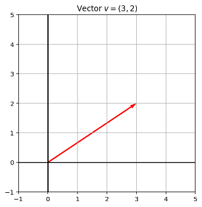
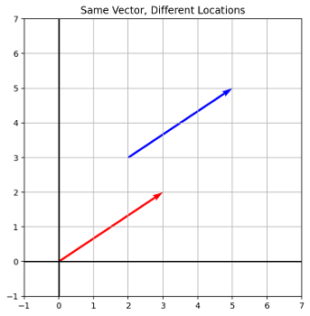
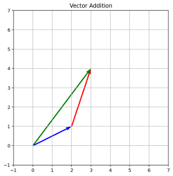
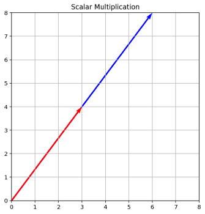
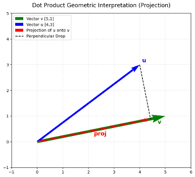
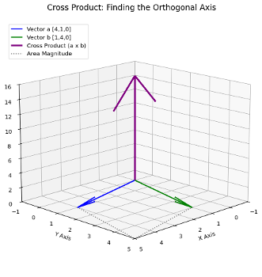
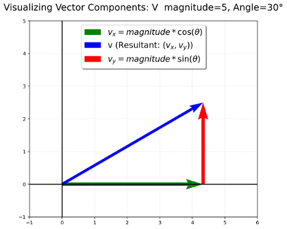

scores = [85, 90, 78]
print(scores * 2)[85, 90, 78, 85, 90, 78]Standard Python is designed for general software development, not math. Structures like lists in Python have their own set of rules that makes using them in mathematical operations difficult. If we try to perform math on a standard Python list, the results are either completely wrong for our purposes, or they crash the program.
Consider a list of test scores: scores = [85, 90, 78]
If we want to double the score of every student, our first instinct is to multiply the list by 2:
print(scores * 2)But what happens is it repeats the list items
scores = [85, 90, 78]
print(scores * 2)[85, 90, 78, 85, 90, 78]Now, if we try to add 2 bonus points to every score using scores + 2, Python throws a TypeError because it does not understand how to combine a list with an integer.
Standard library: library of pre-written functions that comes with Python
Library functions perform tasks that programmers commonly need
Some library functions built into Python interpreter
Modules: files that stores functions of the standard library
To call a function stored in a module, need to write an import statement
import numpy as npas np as a standard convention.scores = [85, 90, 78]
np_scores = np.array(scores)print(np_scores * 2)[170 180 156]Standard Python List:
+ concatenate and * repeat.[1, "apple", True].NumPy ndarray:
Warning: If you put a string into an array of numbers NumPy will silently convert your numbers into strings to maintain uniformity.
arr = np.array([85, 90, "apple"])
print(arr)['85' '90' 'apple']The standard textbook definition of a scalar is “a quantity with magnitude but no direction.”
Another more useful definition when it comes to dealing with vectors is a scalar is a scaling factor.
In Python: A scalar is a standard integer or float like x = 5.
A vector is an ordered list of coordinates that gives us instructions on how to move through space. The dimensionality of the space is the number of values in the vector.
In math, v = [3, 2] means “start at the origin, go 3 units along the x-axis and 2 units along y-axis.” The vector v here has two elements and so the space the vector is in is 2-dimensional.
We can represent this in Python as a 1-dimensional NumPy array.
import numpy as np
v = np.array([3, 2])Visually, we have:

Note that vectors are not tied to a location. We can have two vectors be equal (their components are all identical) while having a different origin.

The magnitude of a vector is its length.
We can find the magnitude of a vector v = [a, b, c, ...] by using the Euclidean distance |v| = \sqrt{a^2 + b^2 + c^2 + ...}
From the definition of the magnitude we can see that it is always non-negative and is a scalar value.
east= np.array([3,0])
north = np.array([0,4])
np.linalg.norm(east+north)np.float64(5.0)Adding (or subtracting) two vectors is combining their instructions.
This can be visualized with the “head to tail” method.

a = np.array([2, 1])
b = np.array([1, 3])
print(a + b)[3 4]Applying a positive scalar to a vector scales its magnitude (length) without changing its fundamental line of direction.
Applying a negative scalar scales its magnitude and changes the direction exactly 180 degrees.

v = np.array([3, 4])
print(2 * v)[6 8]Note that the vector in the code about is twice as long when scaled by 2.
It is natural to assume that if you can do a + b then you can do a \times b. However, when it comes to vectors simply placing an \times between them is undefined. We need to specify exactly what we are calculating.
There are in fact three different ways to “multiply” vectors. These are not different ways to do the same thing, they are entirely different tools design to answer entirely different questions.
In NumPy, the * operator is defined for vectors. That is, a * b will result in output. But it is not likely to be the output you wanted.
a = np.array([1, 2])
b = np.array([3, 4])
print(a * b)[3 8]This is the Hadamard product, which is used to scale the corresponding components of two vectors independently. The Hadamard product simply multiples matching elements:
[a,b] * [c,d] = [a*c, b*d]
That is, it performs element-wise multiplication.
Note that the output is a vector of the same dimensions as the inputs.
The Hadamard product is not often used because it depends on the coordinate system chosen (a choice which is often changed due to mathematical convenience).
The dot product (or scalar product) is used to determine how much two vectors point in the same direction.
The dot product has two formulations (where |v| is the magnitude of the vector v)
a \cdot b = |a||b|\cos(\theta )
a \cdot b = a_1b_1 + a_2b_2 + ...
Note that the output of the dot product is a scalar (hence the term scalar product).
a = np.array([1, 2])
b = np.array([3, 4])
print(np.dot(a, b)) # print(a @ b) is equivalent11We can use the dot product to determine the projection of one vector onto another. Note that orthogonal (perpendicular) vectors have a dot product of zero.

We will use the dot product later in the course as it can be used to calculate the similarity between two objects that have a vector representation.
The cross product finds the unique direction that is perpendicular to both of the vectors and its associated magnitude.
The output of the cross product is a vector itself.
If we take two vectors, they form a flat 2D pane. The cross product produces a new vector completely out of that pane, perpendicular to both.

The length (magnitude) of this new vector represents the area of the parallelogram formed by the original two vectors.
If the two vectors point in the exact same direction, their cross product is zero (no area, no leverage).
If they are perpendicular, the cross product is at its maximum.
a = np.array([4, 1, 0])
b = np.array([1, 4, 0])
# The cross product
print(np.cross(a, b))[ 0 0 15]For a (2-dimensional) vector with magnitude v and angle \theta:
x = v\cos(\theta)
y = v\sin(\theta)

Arrays in NumPy have certain inherent properties, called attributes, that can be useful for diagnosing errors or just inspecting the array. Note that attributes are different from functions, so they do not use parentheses () at the end.
array.shape returns a tuple indicating the number of elements along each axis.
For a 1D array it returns (n,).
For a 2D array it returns (number of rows, number of columns).
Many operations involving vectors require equivalent shapes. For example, the dot product is defined only on two vectors of identical length. array.shape can be used to help diagnose or prevent errors like this.
prices = np.array([10, 20, 30])
print(prices.shape)# Output: (3,) A 1D array with 3 elements
grid = np.array([[1, 2], [3, 4], [5, 6]])
print(grid.shape)# Output: (3, 2) 3 rows, 2 columns(3,)
(3, 2)Note that the comma in a 1D shape like (3,) is because Python handles tuples with a trailing comma to distinguish them from regular parentheses.
array.ndim returns the total number of dimensions (axes) that the array has.
A scalar has ndim = 0
A vector has ndim = 1
A matrix has ndim = 2
array.dtype tells you exactly what kind of data is stored inside.
This can be very useful as NumPy enforces uniform types. If a single string slips into your numbers, the whole array converts to text. Checking .dtype reveals if your numbers have become strings.
Average: Takes the arithmetic mean of the array.
np.mean()Sum: Adds up every element in the array.
np.sum()Max: Returns the largest element in the array.
np.max()Min: Returns the smallest element in the array.
np.min()array.reshape() changes the dimensions of an array without changing its actual data.
flat_data = np.array([1, 2, 3, 4, 5, 6])
# Morph it into 3 rows and 2 columns
grid_data = flat_data.reshape(3, 2)
print(grid_data)[[1 2]
[3 4]
[5 6]]Note that you cannot reshape an array into dimensions that do not fit the number of elements.
If you try flat_data.reshape(3, 3) on the above array, NumPy will throw a: ValueError: cannot reshape array of size 6 into shape (3,3). The shape (3,3) requires exactly 9 items, and we only have 6.
array.flatten() takes a multi-dimensional grid and squashes it back down into a single 1D row. This iu Useful when a library expects a flat sequence of values, but you currently have them inside a multi-dimensional structure.
grid_data = np.array([[1, 2],[3, 4],[5, 6]])
# Morph it into 1 row
flat_data = grid_data.flatten()
print(flat_data)[1 2 3 4 5 6]np.isnan() returns a Boolean array (True/False) indicating where missing or corrupted data (NaN or Not a Number) is located.
If you run np.mean(scores)and the result is just NaN, having just a single broken data point has ruined your calculation. Combining this with an aggregate tool allows you to count how many broken points you have.
data = np.array([85, np.nan, 90])
# Find the missing data
print(np.isnan(data))
# Output: [False, True, False]
# Count how many missing values exist
print(np.sum(np.isnan(data)))
# Output: 1 (Because True acts as 1, False acts as 0)[False True False]
1array.astype() explicitly forces an array to convert from one data type to another.
If you read data from a file and it imports everything as text strings (e.g., ["10", "20", "30"]), you use astype to cast them into actual integers or floats so you can perform vector arithmetic.
string_scores = np.array(["85", "90", "78"])
# Fix the type so we can do math
numeric_scores = string_scores.astype(float)
print(numeric_scores * 2)[170. 180. 156.]NumPy arrays use similar rules for accessing data as standard structures like Python lists. You do not need to relearn how to extract data. The exact same syntax works:
Indexing: scores[0] retrieves the first element.
Negative Indexing: scores[-1] retrieves the last element.
Slicing: scores[1:3] retrieves the second and third elements.